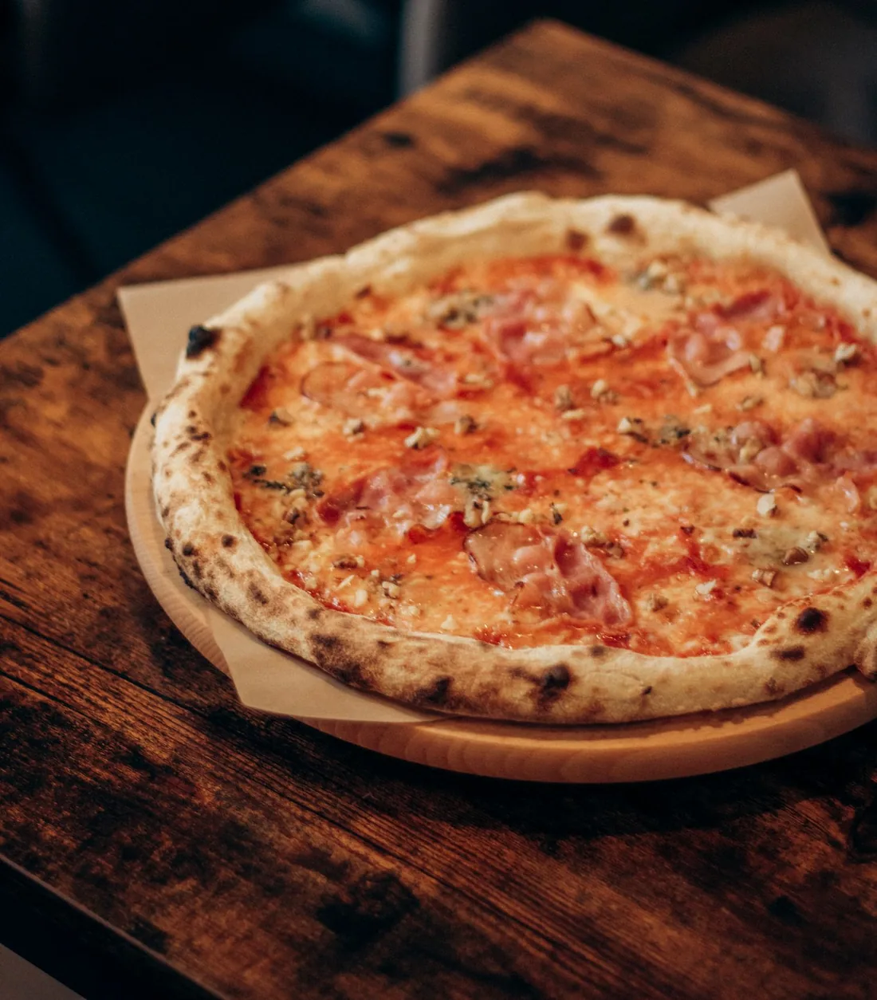

Whitestone, Queens
Brick oven
pizza.
Cheese pies, Grandma squares and Italian favorites on 10th Avenue.
Catering
Pasta trays.
Heroes by the foot.
Feeding a crowd? Call the shop to talk through the menu, portions and pickup.
Call about cateringThe catering menu
- Antipasti & salads
- Baked pasta & Italian entrées
- Heroes & desserts
Visit Cascarino’s
On 10th Avenue.
152-59 10th AvenueWhitestone, NY 11357
See Toast for current pickup and delivery hours. Call for dine-in and holiday hours.